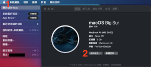
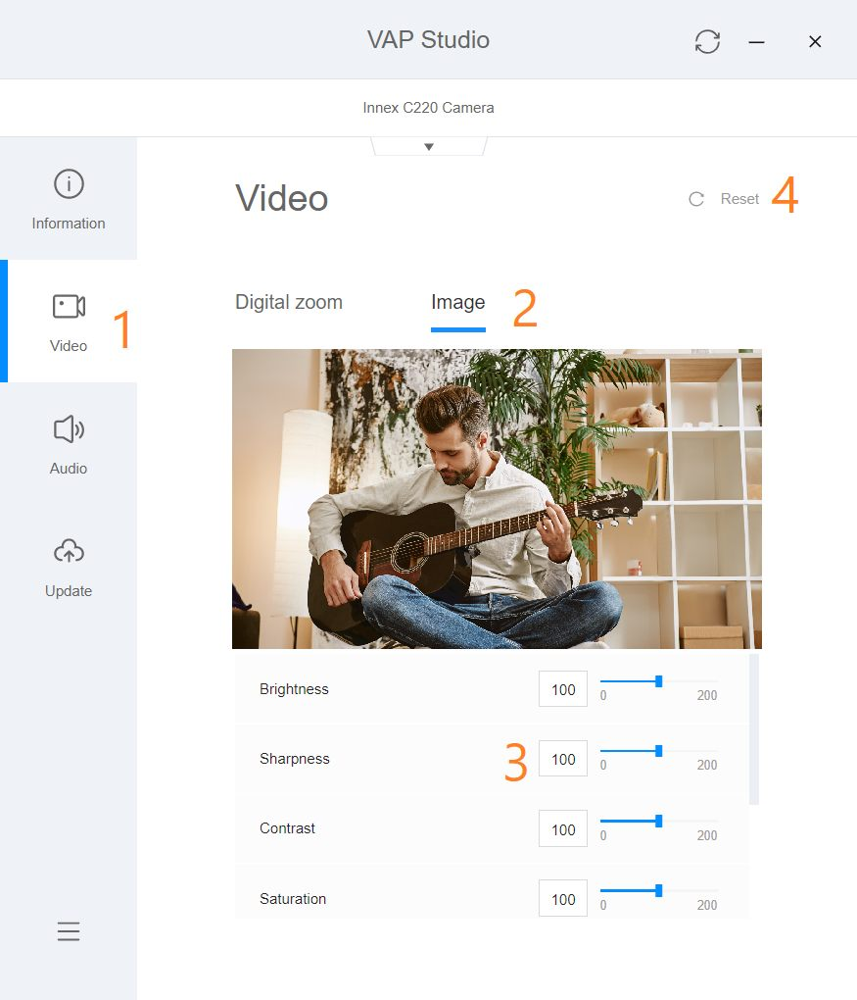

如果可以在軟體選項中看到易思攝影機，但無法看到畫面，有可能是別的軟體「佔用」了視訊（同時開了兩個視訊軟體、影音串流，或相機設定工具等）。請先將所有相關軟體關閉，再重新啟用你要用的視訊通話軟體。
根據USB-IF公布之標準規格，每一種USB接口都有線材長度限制，若超過建議長度，影像傳輸訊號會不穩定。請參考以下建議長度：
USB2.0：5公尺
USB3.0/3.1 Gen 1： 2公尺
USB3.1 Gen 2： 1公尺
- 確保你Mac有辨識到鏡頭，點選左上方關於這台Mac，在概覽中點選系統報告。
- 在相機中看到有鏡頭相關資訊，如果沒有辨識到，請重新插拔鏡頭。
- 到系統偏好設定>安全性與隱私權中，按照以下步驟檢查，到隱私權>攝影機，查看列表，允許要使用的軟體能夠取用你的鏡頭。

人物與攝影機的距離在 1到5公尺之間是最適合C570智能取景的範圍。當畫面中只有一個人，且距離鏡頭在一公尺以內，可能造成取景功能不夠穩定，畫面容易跳動。此外，背景干擾也可能造成自動取景的不穩定，如：有人從後方走過，玻璃反射人影等等。
若以上情況皆已排除，自動取景仍然跳動，請更新產品的韌體（請參考FAQ的更新方法），或使用遙控器關閉自動取景功能。
可以使用遙控器操作或按壓攝影機上方的按鈕。如使用遙控器操作，在自動取景的模式下，壓「AI/M」的按鈕即可切換至手動模式。
如果需要將自動取景一直保持關閉狀態，從遙控器的設定鍵點出選單>模式>智能取景>改成手動模式。
可以使用遙控器操作。遙控器上的+ – 按鈕操作數位放大、縮小，並使用上下左右方向鍵調整視野。C570支援最多5倍數位放大。
- 到下載頁面C570區下載最新版的韌體Zip檔 https://funtechinnovation.com/zh-hant/downloads/
2. 解壓縮zip檔案
3.將C570連接至電腦
4. 在解壓縮的檔案內，找到這個檔案”FicCameraUpdateSSTAR Vxxx.exe” （xxx為版本號碼）
5. 從下拉選單中點選「innex C570 VID_3429&PID_0004」
6. 點選「update」更新

7. 點選「Upgrade Firmware」更新韌體以進行更新
8. 當最後出現「reset」，表示韌體更新成功。請重新插拔攝影機以進行重啟。
可以辨識。
自動取景的倍率取決於解析度。若解析度在720P或以下，放大倍率為3倍。 若在1080P或4K，放大倍率為2倍。多數視訊會議軟體的連線視訊解析度最大支援到720P，所以大多數情況，放大倍率會在3倍。
C570的智能取景是攝影機內建的，不需額外下載軟體操作。
是的，臉部偵測與追蹤功能適用於戴口罩的臉部。
您需要安裝 Innex Studio 來充分發揮 C830 和 C831 的 AI 功能。
您可前往 funtechinnovation.com/downloads/ 下載。
Innex Studio 是專為 C830 和 C831 設計的軟體，具備強大的 AI 功能，例如實時臉部追蹤的分割畫面（最多8人）、自動取景和白板模式。該軟體還可執行 C830 和 C831 的韌體更新。
Innex Studio 支援 Windows 和 Mac，您可以從 funtechinnovation.com/downloads/ 下載。
在視訊通話期間，請確保 Innex Studio 為開啟狀態。在攝影機設定中，請選擇「Studio Camera」作為您的攝影機，而不是選 Innex C830 Camera 或 Innex C831 Camera。

在 Innex Studio 中選擇您需要的視訊模式，您在軟體中看到的畫面預覽會同步分享到視訊會議軟體中。
如需更多資訊，請觀看 YouTube教學影片 。
如果您的 Innex Studio 版本為 1.3515.1 或更舊版本，且使用的是 Mac OS 14.1 或更新版本，Studio Camera 可能沒有顯示在攝影機列表中。請先更新 Innex Studio 軟體以解決此問題。
確保您的 Mac 已連接網路並啟動 Innex Studio。當畫面出現 New Version For Innex Studio 訊息時，點擊 Update now，並按照指示完成軟體更新。

您也可以從以下連結下載最新版本的 Innex Studio 並手動更新。
https://drive.google.com/drive/folders/1r7kUWcbT6G7Bhi94UZ1eXsRvgOL5udcN?usp=sharing
更新完成後，可能會跳出對話框，顯示 System Extension Blocked 。

點擊 Open System Settings，並允許來自 Innex Studio 的系統軟體載入。

完成設定後，返回 Innex Studio。若出現 System restart required… 訊息，請點擊 OK 並重新啟動 Innex Studio。

如果您在訊息顯示時未按「OK」，您可以稍後手動更改設定。請前往 macOS 的「設定」，選擇「一般」>「登入項目與延伸功能」，向下滾動，點擊「延伸功能」下「Camera Extensions」旁的「!」符號，然後開啟「Innex Studio」。
完成以上流程後，Studio Camera 將會出現在攝影機列表中。若仍未顯示，請重啟您的 Mac 後再次確認。
如果您的軟體版本為1.3515.1或者更舊，且您正在使用的Mac作業系統為14.1或更新，相機清單中可能不會出現”Studio Camera”，您需要將Innex Studio更新到最新版本。
請確認您的電腦連接至網際網路並啟動Innex Studio，當訊息”Innex Studio有更新版本”，請點擊”立即升級”並根據指示完成軟體升級。或者您也可以直接前往以下連結下載最新版本的Innex Studio並手動更新。https://drive.google.com/drive/folders/1r7kUWcbT6G7Bhi94UZ1eXsRvgOL5udcN?usp=sharing
更新完成後，對話框會出現”系統擴展被封鎖”。
點選”開啟系統設定”並於”應用程式Innex Studio的系統軟體被封鎖禁止載入”之選項點選”允許”。
允許後，返回Innex Studio將出現”需要重新啟動系統..”之訊息，請按下確定並重新啟動Innex Studio。
以上步驟完成後，您的相機清單將會出現Studio Camera。如果依然沒有出現，請嘗試將您的Mac電腦重新啟動。
請根據以下步驟使Windows啟動時能夠自動運行軟體。
- 點擊「開始」按鈕，並找到該應用程式。
- 右鍵點擊應用程式，選擇「更多」，然後點擊「開啟檔案位置」。此操作將開啟應用程式捷徑所在的資料夾。
- 在檔案位置視窗中，按下 Windows 鍵 + R，輸入 shell:startup，然後點擊「確定」，此操作將開啟「啟動資料夾」。
- 將應用程式捷徑從檔案位置複製並貼到「啟動資料夾」。

- 前往 Windows 設定 > 應用程式 > 啟動。
- 開啟對應的應用程式開關。

- 請重新啟動電腦，並確認應用程式已自動啟動。
Innex Camera is a camera setting software that handles camera firmware update, image setting, EPTZ and auto-framing setting. It works with Innex C220 and C470. Innex Camera is available for both Windows and Mac – it can be downloaded at https://funtechinnovation.com/software/innex-camera-vap-studio/
- Please update your VAP Studio to the latest version to fix this issue.
-
If you are using Windows computer, please download Microsoft Visual C++ Redistributable (Visual Studio 2015, 2017, 2019, and 2022 x64) from the link here: https://learn.microsoft.com/en-us/cpp/windows/latest-supported-vc-redist?view=msvc-170
and run the VAP Studio software again. Our software is created using Microsoft Visual Studio, so it must be installed in your computer in order to run VAP Studio properly.
- If you still experience the same problem after updating to a version released on or later than 2021 Sep. 27th, please contact technical support by leaving us a message https://funtechinnovation.com/faq/
To adjust image quality for C470 and C220 to better match your environment and preference, you can download and use the Innex Camera (VAP Studio) https://funtechinnovation.com/downloads/
- Connect your camera to your computer.
- Start VAP Studio by clicking on the VAP Studio icon.
- Click the video tab (1), (2) Click on Image and adjust each value by adjusting the slider. (3) If a reset is required, simply click on reset to reset the value to default(4).
- The image setting adjustment will be saved into the camera and the camera will retain the adjustment even after it’s disconnected from the pc.
To adjust camera FOV (field of view) and ROI (region of interest) for to better match your environment and preference, you can download and use the Innex Camera (VAP Studio) at https://funtechinnovation.com/downloads/
(Please note that this feature is currently available only with C470)
- Connect your camera to your computer.
- Start VAP Studio by clicking on the VAP Studio icon.
- Disable auto-framing: (1) Click the video tab, (2) Click on Auto Framing tab, (3) Click on auto-framing button so it is slid to the left.

- Adjust with EPTZ: (1) Click on Video, (2) Click on Digital Zoom, (3) Zoom in/out using the plus and minus icon, (4) Pan and tilt using the direction control, (5) Reset to default position (if necessary), (6) Take a photo to validate current FOV and ROI (if necessary), (7) Open folder location to access the photo (if necessary).

- The camera remembers your preferences after reboot so you only need to set it once.
Mac might block the software that is not from the APP Store. Please follow below steps to launch the software
1. Go to System & Preference – Security & Privacy
2. (1) Click General (2) Click the lock to make changes (3) Select App Store and identified developers. And leave this window first.
3. Launch the VAP Studio. You’ll see the same pop-up message. Then click (1)”Open Anyway”, (2) Open.
請根據以下步驟使Windows啟動時能夠自動運行軟體。
- 點選啟動按鈕並下滑直至尋找到軟體。
- 點擊右鍵選擇”更多”接著選擇”開啟檔案位置”。此動作會開啟此軟體存儲的檔案夾。
- 在文件夾開啟的情況下，按下Windows鍵+R，輸入”Shell:startup”並選擇確認。這動作將會開啟”啟動”檔案夾。
- 從軟體檔案夾將此軟體的捷徑複製，並於”啟動”檔案夾內貼上。
- 前往設定>應用程式>啟動
- 將開關點選至”開啟”
- 重新啟動電腦並確定軟體於開機時自動運行。
請依序檢查以下事項
・確認裝置/操作系統支援攝影機。支援的操作系統如下：
<DC500>
Windows 11、10
macOS 10.10 或以上
Chrome OS
iPadOS 17 或更新版本（配備 USB Type-C 埠的 iPad）
<Ideao VisualCam>
Windows 11/10
macOS 10.15 或以上
<IdeaoCam（Chrome 擴充功能）>
Windows、macOS、Chrome OS
・請確保使用原廠附帶的線材或同等規格的傳輸線。使用過長或未經認證的傳輸線可能導致 DC500無法被裝置識別。
・確保攝影機未透過USB集線器與其他裝置連接至您的裝置，因為這可能導致供電不足，造成DC500無法被識別。請嘗試拔除其他裝置，或將DC500直接連接至裝置以查看是否被識別。
・將DC500連接至不同的USB埠，檢查是否被識別。
・損壞的傳輸線有時也可能會造成此問題。如有同等規格的傳輸線，請嘗試使用這些傳輸線連接，檢查裝置是否能識別 DC500。
・如果嘗試了多條傳輸線後裝置仍無法識別 DC500，請將 DC500 連接到另一台裝置（若有的話），以查看是否能被識別。
・在 Windows 上開啟「裝置管理員」，或在 Mac 上開啟「系統報告」，檢查裝置是否識別 DC500 為相機。對於使用 Chrome OS 的裝置，開啟設定，選擇「裝置」或「藍牙」，檢查 DC500 是否出現在清單中。若已嘗試上述方法但裝置仍無法識別 DC500， 請與我們聯繫 。
 如果裝置可辨識攝影機，但無法取得影像，請參閱 「我的裝置可辨識攝影機，但在某些軟體中無法從DC500取得影像」。
如果裝置可辨識攝影機，但無法取得影像，請參閱 「我的裝置可辨識攝影機，但在某些軟體中無法從DC500取得影像」。
請依照以下順序檢查。
・確認在「隱私與安全」設定中，裝置允許應用程式存取攝影機和麥克風。
・確認防毒軟體未封鎖 Ideao VisualCam。您可以前往防毒軟體的應用程式管理設定中允許 Ideao VisualCam 在您的電腦上執行。以下為相關範例：
Avast: https://support.avast.com/en-ph/article/Use-Antivirus-blocked-allowed-apps
Kaspersky: https://support.kaspersky.com/KART/3.0/en-US/130083.htm
・確保除了您要用來擷取影像的應用程式外，沒有其他應用程式正在使用攝影機。請關閉所有其他可能使用攝影機的軟體進行故障排除。舉例來說，如果Zoom正在使用Ideao VisualCam，那麼無法開啟攝影機是常見的問題。
・如果您使用視訊會議軟體卻無法獲得影像，請確認攝影機未被關閉。一般來說，視訊圖示位於左下角，如果攝影機被關閉，圖示將會有紅線劃掉圖案。按一下該圖示可開啟攝影機。
如果您的裝置連接了多台攝影機，而應用程式中顯示的是另一台攝影機的影像，請依以下步驟操作：
使用Ideao VisualCam：
・點擊螢幕左上角的功能表圖示（圓圈內有三條水平線）。
・點擊選單中的「裝置」。
・選擇 Innex DC500。
使用視訊會議軟體：
・點擊視訊圖示旁的「^」圖示（通常位於左下角），顯示攝影機清單。
・選擇 Innex DC500。
請按以下順序檢查
・前往「隱私權與安全性」設定，然後點選「麥克風」並確認應用程式已允許存取麥克風。
・若您正在使用視訊會議軟體，多數情況下，視訊和音訊來源是分開的。因此，即使影像已切換為 Innex DC500，並不代表也選擇了DC500為麥克風。請點擊「音訊」圖示旁的「^」圖示，然後選擇 Innex DC500作為麥克風。
請檢查 Windows/Mac的音訊輸入設定，或視訊會議軟體中的麥克風設定，確認麥克風音量未設為零或過低。
・在 Windows 中開啟「裝置管理員」或在 Mac 上開啟「系統報告」來確認裝置是否識別 DC500 為 USB 音訊裝置。對於使用 Chrome OS 的裝置，開啟設定，選擇「裝置」或「藍牙」，並檢查 DC500 是否出現在清單中。若以上方法皆無效，且您的裝置仍無法識別 DC500， 請與我們聯繫。
搭配 iPad 使用時需注意以下幾點。
1. 不是所有iPad都支援外接相機，僅配備USB Type-C口的iPad相容。
2. iPadOS 版本需為17或更新版本。
3. 目前並非所有應用程式都支援外接相機。
4. 在iPad上使用攝影機的體驗可能與電腦或Mac會有所不同。
5. 解析度及幀率可能會根據 iPad 和應用程式而有所不同。
6. 有些應用程式可能沒有切換相機的功能。當連接相機後，影像來源可能會自動切換至外接相機。如需切換回內建相機，可能需手動拔除外接相機。
7. 對於不支援外接相機輸入的視訊會議應用程式，您可能需要使用第三方應用程式來顯示相機影像，然後在視訊會議軟體中分享您的畫面。
影像的亮度會受到背景顏色的影響。例如，當背景為深色，而拍攝物體較亮時，攝影機會根據主要背景顏色來調整白平衡，導致影像可能看起會更亮。在 Ideao VisualCam 中，您可以點擊「背光補償」圖示，使用滑桿調整白平衡。對於沒有調整白平衡功能的軟體，請確保背景和物體之間的對比度不要過大。
請按以下順序檢查：
・專屬軟體 Ideao VisualCam 支援4K解析度。然而，在某些軟體中，特別是視訊會議軟體中，最大解析度可能未支援 4K。請檢查您使用的軟體支援的最大解析度。
・某些軟體的預設解析度可能不會是4K。請確認軟體的解析度設定沒有過低。
・數位變焦是透過剪裁原始影像的一部分並進行數位放大，因此容易使影像變得粗糙。我們建議您盡量將攝影機移近物體，這樣可以保持影像清晰且不犧牲解析度。（請確保鏡頭與物體之間的距離至少為10公分，使物體保持對焦）

請依序檢查下列事項：
・請確保攝影機未放置於產生強磁場的設備附近。
・確認電源頻率符合您所在區域的標準。請開啟 Ideao VisualCam，於「裝置選擇」中檢查或更改目前的電源頻率。
- 完全展開 DC400/500 的支架。
- 確保相機鏡頭正對紙張的中心，並保持水平放置。
- 按下畫面左側的功能表按鈕（三條橫線的圖示）。
- 在功能表中選擇「解析度」，並將其設定為 3840 x 2880。
- 如果拍攝畫面未完整覆蓋 A3 紙張，請適當調整相機的角度與位置，直至 A3 紙張的完整內容出現在畫面中。
大部分視訊會議軟體（例如 Google Meet、Zoom、Microsoft Teams 和 Webex）會預設將您的相機影像鏡射顯示。不過，這不會影響對方觀看的畫面，對方看到的影像仍會是正常的非鏡像版本。
如果您仍希望在自己端看到非鏡像的畫面，請依照以下步驟操作。
適用於所有視訊會議軟體的通用解決方案
1. 啟動 Ideao VisualCam，顯示來自Innex DC500 的影像。
2. 在視訊通話中，請確保不要選擇 DC500。
3. 選擇「分享螢幕」或「開始」（依軟體而異），並分享 Ideao VisualCam 的螢幕。
Google Meet: （參見教學）
1.有幾款 Google Chrome 擴充功能可以鏡射您的影像。我們建議您下載「VideoMirror」。
2. 開始 Google Meet 通話並選擇 Innex DC500 作為攝影機，點擊擴充功能圖示。視訊畫面將被鏡射。

*請注意，VideoMirror 是第三方應用程式，FTI 不提供該應用程式的支援服務。
Zoom: （參見教學） 或其他視訊會議軟體
1. 前往 Zoom 的「視訊設定」
2. 取消勾選「鏡射我的視訊」

在視訊會議軟體中，可以通過以下幾種方式同時顯示多個攝影機的影像。
網路攝影機 + 螢幕畫面分享：
1. 在視訊會議軟體中選擇網路攝影機以顯示您的樣貌。
2. 啟動 Ideao VisualCam 並顯示 DC500 的影像。
3. 在視訊會議軟體中點擊「分享」
4. 選擇「Ideao VisualCam」後點擊「分享」以開始分享畫面。
Ideao VisualCam 分割畫面模式
1. 不要在視訊會議軟體中開啟相機。
2. 啟動 Ideao VisualCam 並顯示 DC500 的影像。
3. 點擊螢幕左上角的「分屏」圖示。
4. 點擊螢幕右側的任意部分以顯示「選單」圖示。
5. 點擊選單圖示後，再點擊「切換相機」。
6. 點擊「裝置」，選擇要顯示影像的攝影機。
Ideao VisualCam 畫中畫 (PIP) 模式
1. 不要在視訊會議軟體中開啟相機。
2. 啟動 Ideao VisualCam 並顯示 DC500 的影像。
3. 點擊左側工具欄中的 PIP 圖示顯示來自攝影機的畫面。
將 DC500 的即時影像嵌入到 PowerPoint 簡報
1. 在製作簡報內容時，從「插入」中點選「Cameo」。
2. 選取相機樣式，點擊「預覽」，選擇 DC500 作為影像來源。
3. 開始簡報後，顯示DC500即時影像的同時，您的樣貌也會在視訊會議軟體中呈現。
請依序確認以下事項
・請確保您的裝置或操作系統支援此攝影機。支援的作業系統如下：
<DC400>
Windows 11、10
macOS 10.10 或更新版本
Chrome OS
<Ideao VisualCam>
Windows 11/10
macOS 10.15 或更新版本
<IdeaoCam (Chrome 擴充功能)>
Windows, macOS, Chrome OS
・請務必使用原廠傳輸線或同等規格的傳輸線。使用過長或未經認證的傳輸線，可能會導致您的裝置無法辨識 DC400。
・請確認攝影機不是經由USB集線器與其他裝置一同連接到您的裝置，因為這樣可能會導致電力不足，使您的裝置無法偵測到DC400。建議拔除其他裝置，或將DC400直接連接到您的裝置，以檢查是否可以被偵測到。
・將DC400連接到不同的USB接口，查看是否可以被辨識。
・損壞的傳輸線有時也可能會造成此問題。如有同等規格的傳輸線，請嘗試使用這些傳輸線連接，檢查裝置是否能識別 DC400。
・ 如果嘗試多條USB線後，DC400 仍然無法被您的裝置辨識，請連接至其他裝置 (如果您有的話)，檢查是否可以被辨識。
・ 開啟 Windows 的「裝置管理員」或 Mac 的「系統報告」，檢查 DC400 是否被裝置辨識為攝影機。對於執行 Chrome OS 的裝置，請開啟設定，選擇「裝置」或「藍牙」，並檢查 DC400 是否出現在清單中。如果已嘗試以上所有方法，但您的裝置仍無法辨識 DC400， 請與我們聯繫。

 當設備識別到攝影機但無法獲取影像時，請參考「我的設備識別到DC400但無法在某些軟體中獲取DC400的影像。」
當設備識別到攝影機但無法獲取影像時，請參考「我的設備識別到DC400但無法在某些軟體中獲取DC400的影像。」
請依照以下步驟進行排查。
・ 確保在隱私權與安全性設定中，允許應用程式存取攝影機和麥克風。
・ 確保防毒軟體未阻擋Ideao VisualCam。您可以前往防毒軟體的應用程式設定，允許Ideao VisualCam在您的電腦上執行。以下是一些範例：
Avast: https://support.avast.com/en-ph/article/Use-Antivirus-blocked-allowed-apps
Kaspersky: https://support.kaspersky.com/KART/3.0/en-US/130083.htm
確保除了您要用來擷取影像的應用程式外，沒有其他應用程式正在使用攝影機。請關閉所有其他可能使用攝影機的軟體進行故障排除。舉例來說，如果Zoom正在使用Ideao VisualCam，那麼無法開啟攝影機是常見的問題。
如果您無法在視訊會議軟體中取得攝影機的影像，請確認攝影機沒有被關閉。通常，視訊圖示位於左下角。如果圖示被關閉，會有紅色線條標示。請點擊圖示以開啟攝影機。
如果您的裝置連接了多台攝影機，而應用程式中顯示的是另一台攝影機的影像，請依以下步驟操作：
使用Ideao VisualCam：
・點擊螢幕左上角的功能表圖示（圓圈內有三條水平線）。
・點擊選單中的「裝置」。
・選擇 Ideao DC400。
使用視訊會議軟體：
・點擊視訊圖示旁的「^」圖示（通常位於左下角），顯示攝影機清單。
・選擇 Ideao DC400。
請按以下順序檢查
・前往「隱私權與安全性」設定，然後點選「麥克風」並確認應用程式已允許存取麥克風。
・若您正在使用視訊會議軟體，多數情況下，視訊和音訊來源是分開的。因此，即使影像已切換為 Ideao DC400，並不代表也選擇了DC400為麥克風。請點擊「音訊」圖示旁的「^」圖示，然後選擇 Ideao DC400作為麥克風。 請檢查 Windows 的音訊輸入設定，或視訊會議軟體中的麥克風設定，確認麥克風音量未設為零或過低。
請檢查 Windows 的音訊輸入設定，或視訊會議軟體中的麥克風設定，確認麥克風音量未設為零或過低。
・在 Windows 中開啟「裝置管理員」或在 Mac 上開啟「系統報告」來確認裝置是否識別 DC400 為 USB 音訊裝置。對於使用 Chrome OS 的裝置，開啟設定，選擇「裝置」或「藍牙」，並檢查 DC400 是否出現在清單中。若以上方法皆無效，且您的裝置仍無法識別 DC400， 請與我們聯繫。
搭配 iPad 使用時需注意以下幾點。
1. 不是所有iPad都支援外接相機，僅配備USB Type-C口的iPad相容。
2. iPadOS 版本需為17或更新版本。
3. 目前並非所有應用程式都支援外接相機。
4. 在iPad上使用攝影機的體驗可能與PC或Mac會有所不同。
5. 解析度及幀率可能會根據 iPad 和應用程式而有所不同。
6. 有些應用程式可能沒有切換相機的功能。當連接相機後，影像來源可能會自動切換至外接相機。如需切換回內建相機，可能需手動拔除外接相機。
7. 對於不支援外接相機輸入的視訊會議應用程式，您可能需要使用第三方應用程式來顯示相機影像，然後在視訊會議軟體中分享您的畫面。
影像的亮度會受到背景顏色的影響。例如，當背景為深色，而拍攝物體較亮時，攝影機會根據主要背景顏色來調整白平衡，導致影像可能看起會更亮。在 Ideao VisualCam 中，您可以點擊「背光補償」圖示，使用滑桿調整白平衡。對於沒有調整白平衡功能的軟體，請確保背景和物體之間的對比度不要過大。
請按以下順序檢查：
・專屬軟體 Ideao VisualCam 支援4K解析度。然而，在某些軟體中，特別是視訊會議軟體中，最大解析度可能未支援 4K。請檢查您使用的軟體支援的最大解析度。
・某些軟體的預設解析度可能不會是4K。請確認軟體的解析度設定沒有過低。
・數位變焦是透過剪裁原始影像的一部分並進行數位放大，因此容易使影像變得粗糙。我們建議您盡量將攝影機移近物體，這樣可以保持影像清晰且不犧牲解析度。（請確保鏡頭與物體之間的距離至少為10公分，使物體保持對焦）
請依序檢查下列事項：
・請確保攝影機未放置於產生強磁場的設備附近。
・確認電源頻率符合您所在區域的標準。請開啟 Ideao VisualCam，於「裝置選擇」中檢查或更改目前的電源頻率。
- 完全展開 DC400/500 的支架。
- 確保相機鏡頭正對紙張的中心，並保持水平放置。
- 按下畫面左側的功能表按鈕（三條橫線的圖示）。
- 在功能表中選擇「解析度」，並將其設定為 3840 x 2880。
- 如果拍攝畫面未完整覆蓋 A3 紙張，請適當調整相機的角度與位置，直至 A3 紙張的完整內容出現在畫面中。
為了確保當手在文件周圍移動時，鏡頭不會自動對焦，避免畫面閃爍。
Ideao DC400是一台自動對焦的實物攝影機，但可以透過軟體將其切換為手動對焦。
Windows 電腦：
- 相機app：如果您正在使用 Windows 內建的相機應用程式拍攝或錄影，可按以下步驟切換為手動對焦：
- 進到設定，開啟「進階控制」

- 點擊圓圈圖示，並稍微移動滑桿，即可切換為手動對焦，圖示將從「Auto」變為「M」。

- 按下 DC400 頂部的 AF 按鈕以觸發一次自動對焦。
- 對焦距離將會被固定。當拍攝距離改變時，請按頂部的 AF 按鈕重新對焦。
- 如需重新啟用自動對焦，將滑桿移回「Auto」。
- 進到設定，開啟「進階控制」
- AMCap: 您也可以使用第三方軟體 AMCap 關閉自動對焦。
- 從以下連結下載並安裝 https://amcap.en.softonic.com/download
- 將 DC400 連接至電腦，並開啟 AMCap。
- 在設備中選擇 DC400。前往 視訊 > 屬性 > 相機控制，取消勾選自動對焦（Autofocus）選項，然後點擊「套用」。
4. 自動對焦功能現在已停用。
5. 當您在如 IdeaoCam 這類應用程式中開啟攝影機時，仍會看到 DC400 自行調整焦點，這是正常現象。一旦焦距設定完成，直到您再次按下 AF 按鈕前，焦距將不會再變動。
Mac 系統：
- Webcam Setting（付費App）：前往 App Store 搜尋「Webcam Setting」，或點擊連結下載 https://apps.apple.com/app/webcam-setting/id1610840452?mt=12
- 連接 Ideao DC400 並選擇相機。
- 前往「進階」標籤頁。
- 取消勾選自動對焦（Autofocus）。

- 當您第一次打開相機影像時，DC400 仍會自動調整焦點；一旦焦距設置完成，將不會再次調整，除非您按了AF 按鈕。
* AMCap 和 Webcam Setting 並非由 FTI 開發，FTI 不負責維護這些軟體或保證其功能與可用性。
大部分視訊會議軟體（例如 Google Meet、Zoom、Microsoft Teams 和 Webex）會預設將您的相機影像鏡射顯示。不過，這不會影響對方觀看的畫面，對方看到的影像仍會是正常的非鏡像版本。
如果您仍希望在自己端看到非鏡像的畫面，請依照以下步驟操作。
適用於所有視訊會議軟體的通用解決方案
1. 啟動 Ideao VisualCam，顯示來自Ideao DC400 的影像。
2. 在視訊通話中，請確保不要選擇 DC400。
3. 選擇「分享螢幕」或「開始」（依軟體而異），並分享 Ideao VisualCam 的螢幕。
Google Meet: （參見教學）
1.有幾款 Google Chrome 擴充功能可以鏡射您的影像。我們建議您下載「VideoMirror」。
2. 開始 Google Meet 通話並選擇 IDEAO DC400 作為攝影機，點擊擴充功能圖示。視訊畫面將被鏡射。
*請注意，VideoMirror 是第三方應用程式，FTI 不提供該應用程式的支援服務。
Zoom: （參見教學） 或其他視訊會議軟體
1.前往 Zoom 的「視訊設定」
2.取消勾選「鏡射我的視訊」

在視訊會議軟體中，可以通過以下幾種方式同時顯示多個攝影機的影像。
網路攝影機 + 分享畫面：
1. 在視訊會議軟體中選擇網路攝影機以顯示您的樣貌。
2. 啟動 Ideao VisualCam 並顯示 DC400 的影像。
在視訊會議軟體中點擊「分享」
4. 選擇「Ideao VisualCam」後點擊「分享」以開始分享畫面。
Ideao VisualCam 分割畫面模式
1. 不要在視訊會議軟體中開啟相機。
2. 啟動 Ideao VisualCam 並顯示 DC400 的影像。
3. 點擊螢幕左上角的「分屏」圖示。
4. 點擊螢幕右側的任意部分以顯示「選單」圖示。
5. 點擊選單圖示後，再點擊「切換相機」。
6. 點擊「裝置」，選擇要顯示影像的攝影機。
Ideao VisualCam 畫中畫 (PIP) 模式
1. 不要在視訊會議軟體中開啟相機。
2. 啟動 Ideao VisualCam 並顯示 DC400 的影像。
3. 點擊左側工具欄中的 PIP 圖示顯示來自攝影機的畫面。
將 DC400 的即時影像嵌入到 PowerPoint 簡報
1. 在製作簡報內容時，從「插入」中點選「Cameo」。
2. 選擇相機樣式，點擊「預覽」，然後選擇 DC400 作為影像來源。
3. 開始簡報後，顯示DC400即時影像的同時，您的樣貌也會在視訊會議軟體中呈現。
Manage app settings to allow Ideao VisualCam to run on your computer.
Avast: https://support.avast.com/en-ph/article/Use-Antivirus-blocked-allowed-apps
Kaspersky: https://support.kaspersky.com/KART/3.0/en-US/130083.htm
請根據以下步驟使Windows啟動時能夠自動運行軟體。
- 點選啟動按鈕並下滑直至尋找到軟體。
- 點擊右鍵選擇”更多”接著選擇”開啟檔案位置”。此動作會開啟此軟體存儲的檔案夾。
- 在文件夾開啟的情況下，按下Windows鍵+R，輸入”Shell:startup”並選擇確認。這動作將會開啟”啟動”檔案夾。
- 從軟體檔案夾將此軟體的捷徑複製，並於”啟動”檔案夾內貼上。
- 前往設定>應用程式>啟動
- 將開關點選至”開啟”
- 重新啟動電腦並確定軟體於開機時自動運行。